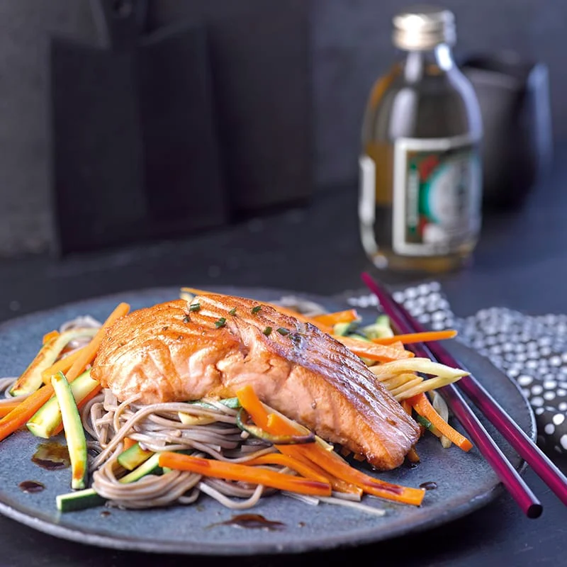

Soba noodles with salmon and stir-fried vegetables

A delicious and quick meal for 2 persons
About as easy and quick as noodles get, Mathijs would say "Godverdomme das makkelijk!"
Vegetables can be replaced with pretty much any other vegetables suitable for stir-frying
Ingredients
- 200g of salmon (on skin)
- 150g of soba noodles
- Tbsp of sesame seeds
- 50g bean sprouts
- 100g broccoli
- 100g cauliflower
- Oil for stir-frying and frying the salmon
Sauce
- 5 cups soy sauce
- 1 cup mirin
- 1 cup sesame oil
- 1 cup honey
Steps
- Boil water in pan
- Put in the soba noodles for as long as instructed by the package
- Once done boiling, pour the noodles in a strainer and let them cool
- Heat stir-frying pan and a frying pan and add some oil
- Stir-fry vegetables for however long you prefer
- Put the salmon in the frying pan, fry until 2/3 done, then turn salmon upside-down and take the pan off the stove. Let it sit until fully done.
- Roast sesame seeds in hot pan until they're nicely brown and done
- Add cups of sauce together and stir until they're fully mixed
As a final step add everything together and enjoy your meal!